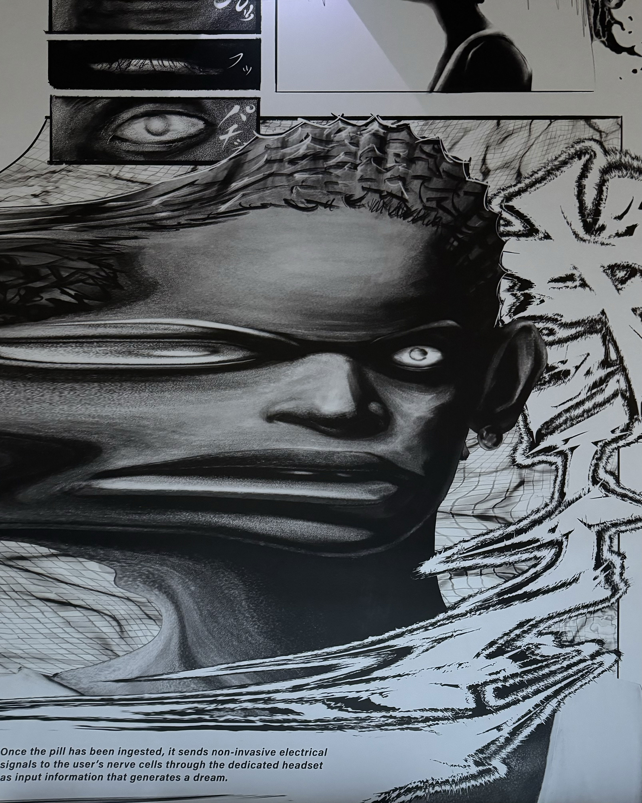

Unknown
Studio 525

Jean-Michel and Andy achieved a healthy balance. Each one inspired the other to outdo the next. The collaborations were seemingly effortless. It was a physical conversation happening in paint instead of words. The sense of humor, the snide remarks, the profound realizations, the simple chit-chat all happened with paint and brushes....
-Keith Haring, October 4, 1988, New York City (T.Shafrazi, JEAN-MICHEL BASQUIAT, New York 1999, p. 298)